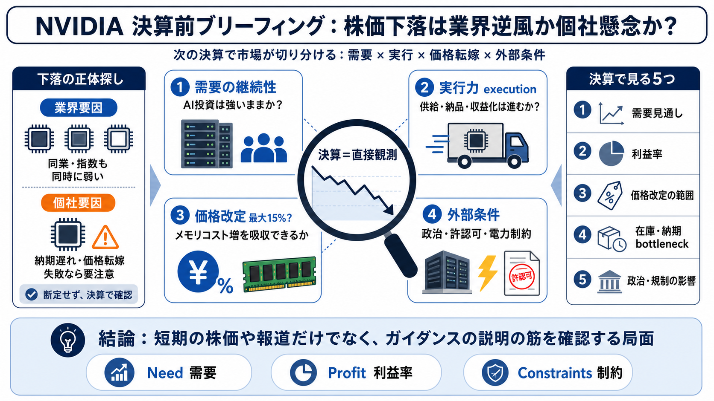

Nvidia (NVDA) earnings report Q3 2026
Here's how the company did, compared with estimates from analysts polled by LSEG: Earnings per share: $1.30 adjusted v…

Here's how the company did, compared with estimates from analysts polled by LSEG: Earnings per share: $1.30 adjusted v…
Revenue is expected to be $65.0 billion, plus or minus 2%. GAAP and non-GAAP gross margins are expected to be 74.8% and…
### Q3 Revenue Surges 62% YoY The company reported $57.0 billion in revenue, marking an impressive 62% year-over-year i…
Revenue: $46.74 billion, beating estimates of $46.06 billion. This marked a 56% YoY increase from $30.04 billion, extend…
to invest. And obviously before we start, as always, let me remind you that if you are not subscribed to our channel, y…